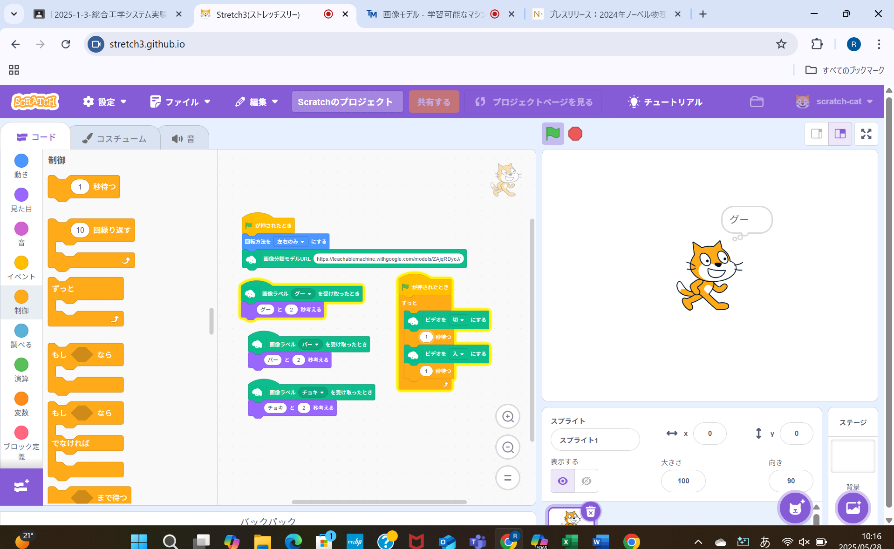

第2週目
2-1 2週目のレポートをHTMLで作る
1.内容
githubのプログラムを変え、文字を打ち込んで編集内容を適用させることでサイトを更新させ、レポートを完成させる。
2.感想
コードを変更することでブラウザの表示がすぐに変わるのが印象的だった。
プログラムの基本を深く理解することができて良かった。
3. 2週目が完成した人は1週目のレポートも完成させる
2-2 機械学習体験

1.内容
じゃんけんの出す手をコンピューターのカメラで学習させ、学習させたものを
スクラッチに導入させ、カメラで判別したものをcatに言わせるプログラムを作成した。
2.感想
学習機械はデータに左右されるので、かなり個人差があるのかなと思った。
また、データに偏りがある場合の誤った判断をする可能性があるため、万能ではないと感じた。
2-3 VR（バーチャルリアリティー：Virtual Reality）の体験
1.内容
VRに対応するゴーグルを使用して大阪公立大高専の構造をrobloxで表現されたマップを自分で操作した。
2.感想
ゴーグルを装着したとき頭が重くなって首が疲れた。しかし、VRの世界に引き込まれて首の疲れを忘れてしまうくらい興味深さを感じた。